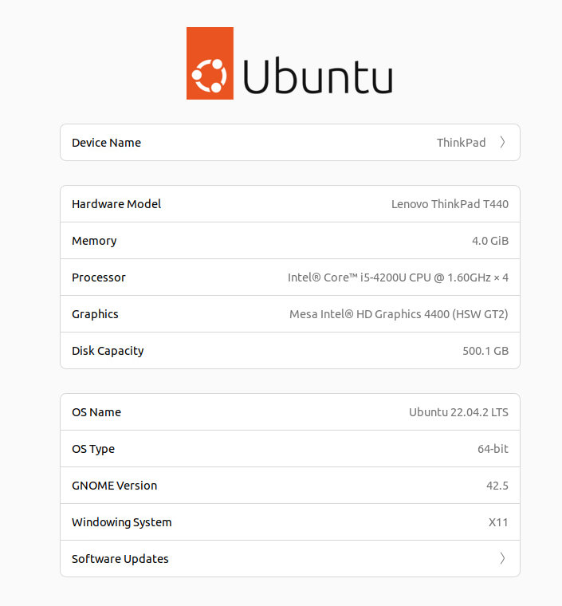
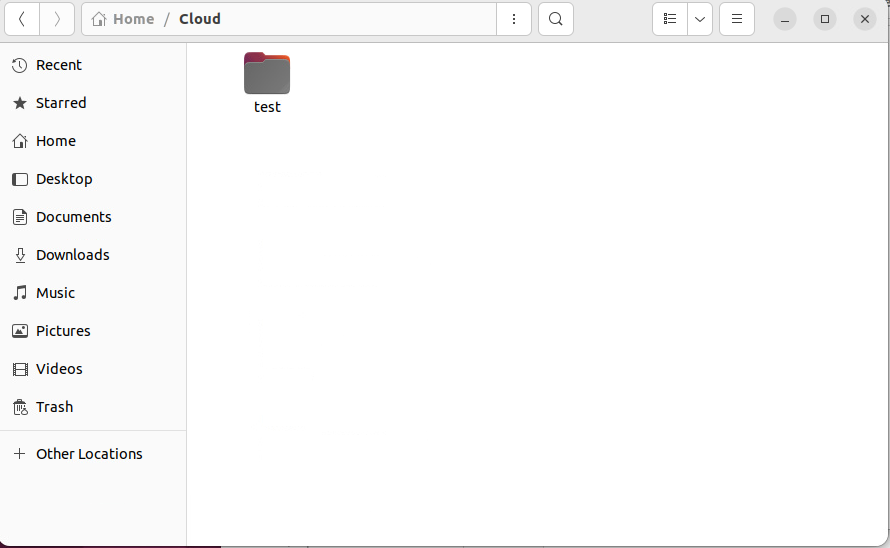
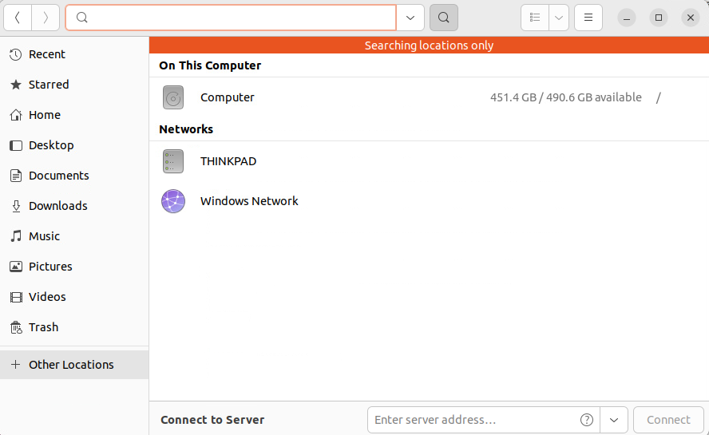
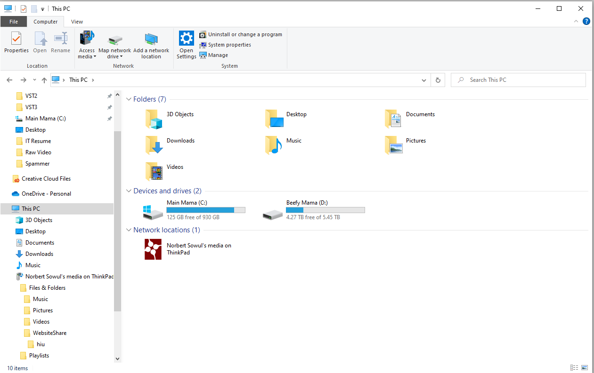

Today was the day I received the devastating news. I was rejected for the job opportunity I was really hoping to get. Yeah, it stung because of the amount of time it took and the amount of hope that was filling up in me every day. Imagining the day that I can finally give in my two weeks notice to my current job, and finally start doing something I've always wanted. But I blew it, however I learned a lot from my experiences interviewing with this company.
There are some key points I was missing. First and foremost was “IT Experience”. I have a general knowledge of how computer hardware and software works, however when it comes to networking the best I can do is set up the modem and router. There is so much more to networking that I want to learn. So the first step was to create a website. If you’re reading this, then great success!
So here I am, writing the first post of the website. It's exciting, and also daunting. But I like this new feeling. Getting to wake up in the morning with a newfound purpose, thinking about the possibilities of where to start and what to do is exciting. I started by looking through my pile of dead laptops sitting in the corner of my guest bedroom. (I told myself I would do something about them one day. But there they sit to this day.) I had two worthy laptops, because they were the only two that worked out of the 8. My old trusty Lenovo ThinkPad I received as a gift in college, and the old ACER chunk of silicon I inherited from my brother. The Lenovo would be perfect to host the website on, and eventually down the road I would like to play around with Windows Server on the ACER, so I put him aside.
The process was simple. Download the ISO Image file, find a spare flash drive lying around the house(not so simple) and boot up rufus to flash the image onto the ThinkPad. Then into the installer I went. I followed the installation as best as I could. I've installed Ubuntu countless times on different computers, I figured Ubuntu Server wouldn't be so different. And it wasn't. Until it came to connect it to the internet.
No ethernet cord. And no helpful GUI to point, click, and enter my Wifi information into. I looked up tutorials on how to connect an ubuntu server to a wifi, and I followed the instructions creating a YAML file and writing down everything letter for letter. Still no luck, indentation error here, indentation error there. God the indentations still haunt me to this day. And if it wasn't an indentation error it was something else.
Okay, so I might have jumped off the deep end and drowned. Time to get pulled out and try again with something more familiar. Ubuntu Desktop. Long Term Support for Version 22. I flashed a new image and booted up the installer. Followed the directions with the help of a lovely GUI, connected it to my home WIFI network and started installing updates. Taking the small win, I added on top of it setting up local network drive sharing between my main windows computers and the ThinkPad. They see each other… but don’t want to talk to each other. I will have to figure out a solution for this later.
I set up Ubuntu to share this file with Windows, but it does not show up... I wonder why.
The windows workstation sees the Thinkpad and some other folders I didn't make. But not that cloud folder...
